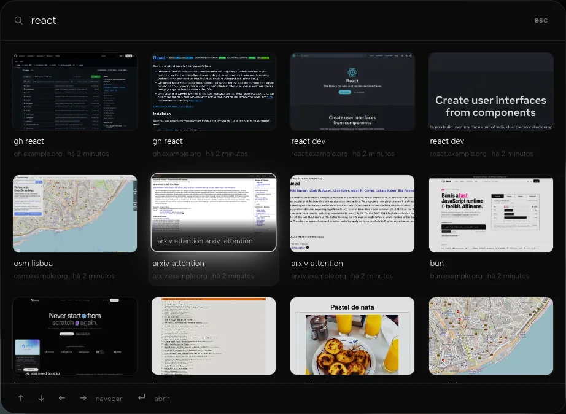
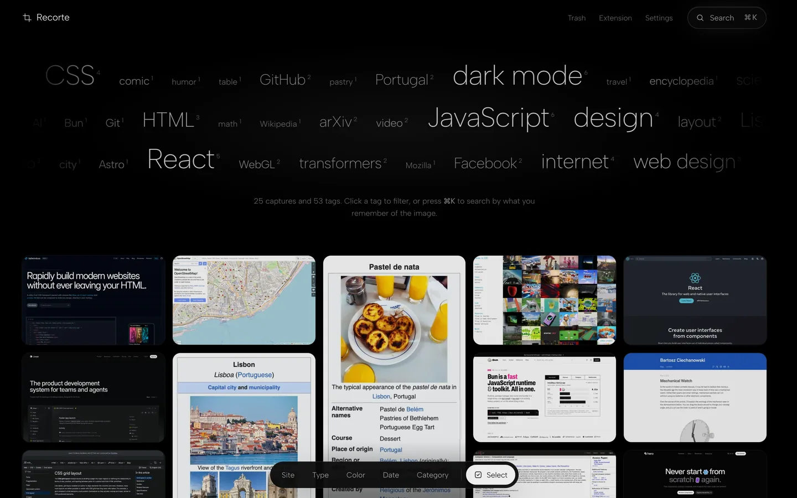
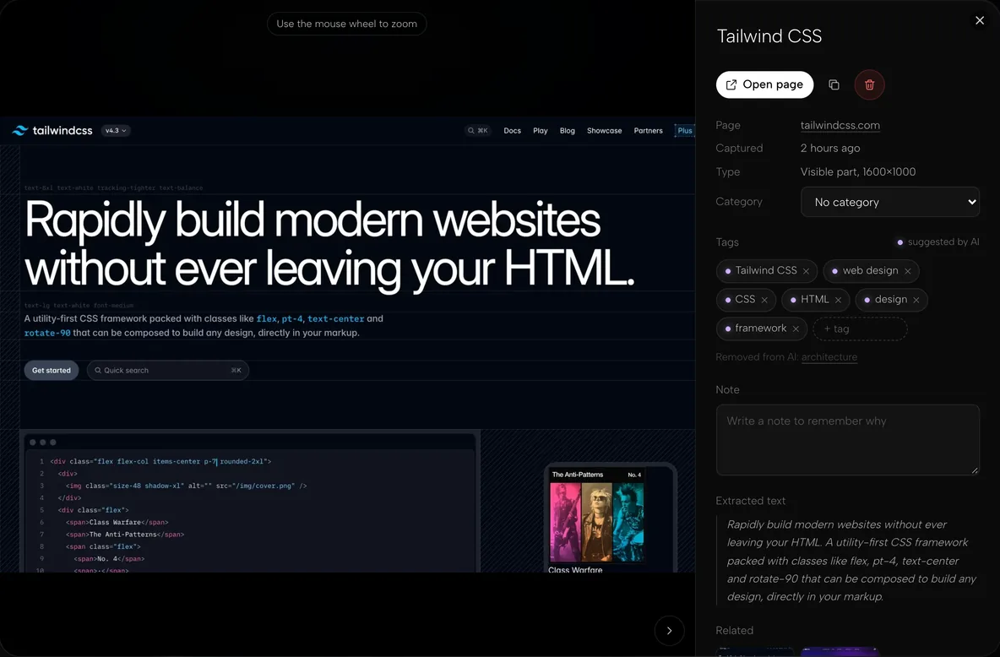
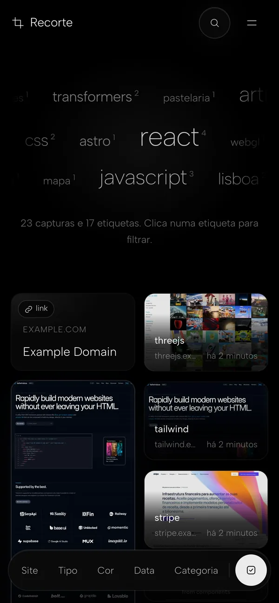
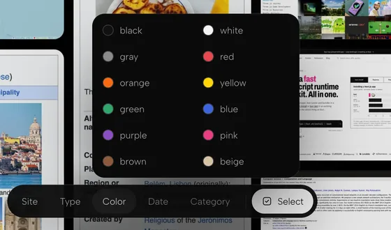

Search by what you remember
Press ⌘K or Ctrl+K and describe it. Full-text and semantic search work together, so a vague memory is enough, and the results come back as pictures.

Recorte saves screenshots and links from the web to your own server, tags them with local AI, and finds them again by what you remember.
Free and open source. MIT licensed. Runs in one Docker container.

They pile up as Screenshot 2026-11-08 at 14.32.png, cut off from the page they came from. Bookmarks forget what the page looked like. Read-later apps keep your history on someone else’s server.
Recorte keeps each capture with its address and the text of the page, tags it on your own machine, and puts it all in one place you can search. Type “that recipe for Portuguese custard tarts” and the capture comes back, even if the page was in another language.
Press ⌘K or Ctrl+K and describe it. Full-text and semantic search work together, so a vague memory is enough, and the results come back as pictures.

Alt+Shift on Windows and Linux. Add a title, note or tags before it saves.
A text tagger reads the whole page and SigLIP2 looks at the image, both on the CPU. No GPU, no API key. A cloud model is optional.
Zoom into the full-resolution capture, edit tags and notes, and jump back to the original page.

Made for phones too. Install the gallery as an app.

Narrow down by site, type, color, date or category. Click any tag in the cloud to filter by it.

/data
├─ items/…/meta.json
│ original.webp
├─ recorte.db
└─ meili/One plain meta.json per capture, plus SQLite. Export everything as a ZIP whenever you like.
Right-click to save a link, a page or an image. Your server fetches the title, description and preview, and posts from X keep their embedded video.
English Português Español Français Italiano
The gallery and the extension follow your browser. Tags show up in your language, and search finds them in any of the five.
One docker run on your home server, NAS or VPS. The API, the gallery, the AI models and the search engine all live in a single container.
Open the server’s address in a browser. A three-step wizard sets up your email and password, the public address, and optional cloud AI.
Download it for Chrome or Firefox from the gallery, sign in once, and start capturing. Each capture arrives with its page text and tags.
You need Docker on amd64 or arm64 and 2 GB of RAM (4 GB recommended).
docker run -d --name recorte \
--restart unless-stopped \
-p 8080:8080 -v recorte:/data \
ghcr.io/qwickin/recorteThen open http://<server-ip>:8080 within 15 minutes and follow the wizard. HTTPS with your own domain, backups and updates are covered in the README.